# VuePress构建
前言
上一篇博客写了VuePress本地运行，有需要的点击这里,怎么把VuePress本地运行的结果放到Github上通过配置GitHub Pages显示呢
首先默认你已经可以在本地运行起来了VuePress，那么你至少通过上一篇博客或者其他码友的博客学会了搭建本地VuePress, 你应该知道启动本地服务器的命令
npm run dev #npm run docs:dev
yarn 启动命令如下
yarn dev #yarn docs:dev
至于使用dev还是docs:dev，请打开VuePress根目录下package.json文件查看scripts中配置的有没有带有docs:前缀
scripts中一共有两个命令一个是dev 用来运行本地服务器启动VuePress,另外一个是 build这个build就是用来构建VuePress的，
那么构建的是什么？
VuePress中目前都是创建的.md格式的文件，浏览器显示的事html的格式，对，你猜的没错，构建就是将所有.md格式的文件动态编译为静态html文件。
说了这么多VuePress都已经运行起来了，还没有介绍VuePress的目录结构,以下目录内容摘自官网"目录结构"
.
├── docs
│ ├── .vuepress (可选的)
│ │ ├── components (可选的)
│ │ ├── theme (可选的)
│ │ │ └── Layout.vue
│ │ ├── public (可选的)
│ │ ├── styles (可选的)
│ │ │ ├── index.styl
│ │ │ └── palette.styl
│ │ ├── templates (可选的, 谨慎配置)
│ │ │ ├── dev.html
│ │ │ └── ssr.html
│ │ ├── config.js (可选的)
│ │ └── enhanceApp.js (可选的)
│ │
│ ├── README.md
│ ├── guide
│ │ └── README.md
│ └── config.md
│
└── package.json
2
3
4
5
6
7
8
9
10
11
12
13
14
15
16
17
18
19
20
21
22
以上一篇博客创建testblog为例，我们在.docs中创建.vuepress文件夹，然后在文件夹下创建config.js文件
- 注意区分大小写
- 当你想要去自定义
templates/ssr.html或templates/dev.html时，最好基于 默认的模板文件 (opens new window)来修改，否则可能会导致构建出错。
docs/.vuepress: 用于存放全局的配置、组件、静态资源等。docs/.vuepress/components: 该目录中的 Vue 组件将会被自动注册为全局组件。docs/.vuepress/theme: 用于存放本地主题。docs/.vuepress/styles: 用于存放样式相关的文件。docs/.vuepress/styles/index.styl: 将会被自动应用的全局样式文件，会生成在最终的 CSS 文件结尾，具有比默认样式更高的优先级。docs/.vuepress/styles/palette.styl: 用于重写默认颜色常量，或者设置新的 stylus 颜色常量。docs/.vuepress/public: 静态资源目录。docs/.vuepress/templates: 存储 HTML 模板文件。docs/.vuepress/templates/dev.html: 用于开发环境的 HTML 模板文件。docs/.vuepress/templates/ssr.html: 构建时基于 Vue SSR 的 HTML 模板文件。docs/.vuepress/config.js: 配置文件的入口文件，也可以是YML或toml。docs/.vuepress/enhanceApp.js: 客户端应用的增强。
使用默认主题
---
home: true
heroImage: /timg.jfif
heroText: Hero 标题
tagline: Hero 副标题
actionText: 快速上手 →
actionLink: /zh/guide/
features:
- title: 简洁至上
details: 以 Markdown 为中心的项目结构，以最少的配置帮助你专注于写作。
- title: Vue驱动
details: 享受 Vue + webpack 的开发体验，在 Markdown 中使用 Vue 组件，同时可以使用 Vue 来开发自定义主题。
- title: 高性能
details: VuePress 为每个页面预渲染生成静态的 HTML，同时在页面被加载的时候，将作为 SPA 运行。
footer: MIT Licensed | Copyright © 2018-present Evan You
---
2
3
4
5
6
7
8
9
10
11
12
13
14
15
16
运行查看
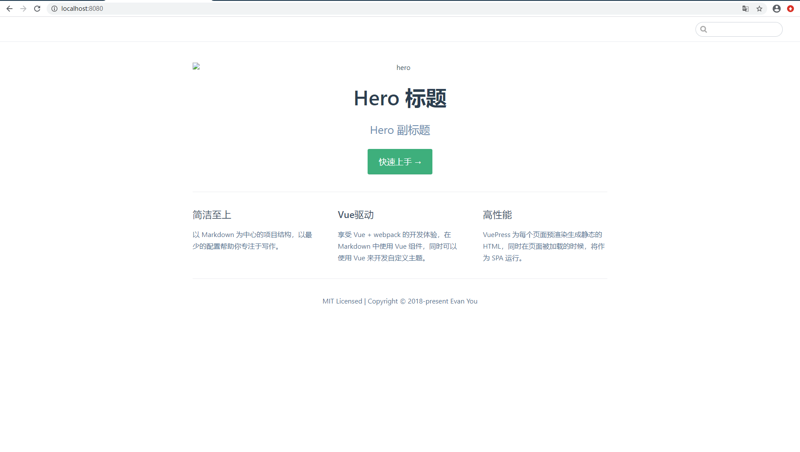
图片没显示是因为配置图片不存在，放一张进去 doc/.vuepress/public 是放静态资源的 那么我们暂时在public 下创建一个images文件夹然后把图片放进去
在根目录也就是docs同层的文件夹下，package.json 右键打开git bansh here
npm run build
构建之后可以查看信息，如看不懂没关系，直接跳过.
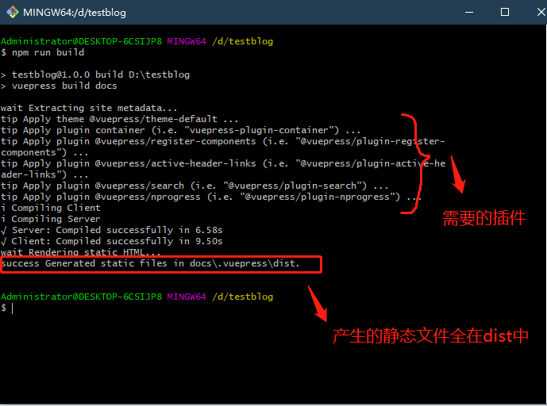
本地文件目录，在根目录也就是docs同级下生成一个node-modules文件夹，这个是放本地的插件.一般不用管
另外输出信息 大概是说在docs\\vuepress\dist 下生成静态文件。
可以看到dist 下就是构建生成的静态页面，我们之后把这个目录上传到GitHub 上然后配置一下GitHub Page就行了，具体配置请参考[GitHub Pages配置](1292140.html##Github Pages )
当然可以修改dis的路径 .vuepress\config.js设置 dest
配置导航栏
// .vuepress/config.js
module.exports = {
themeConfig: {
"nav": [{
"text": "主页",
"link": "/",
"icon": "reco-home"
},
{
"text": "时间线",
"link": "/timeline/",
"icon": "reco-date"
},
{
"text": "GitHub",
"link": "https://github.com/ITSparkleChen/blog",
"icon": "reco-github"
},
{
"text": "关于",
"link": "/about/",
"icon": "reco-account"
}
]
}
}
2
3
4
5
6
7
8
9
10
11
12
13
14
15
16
17
18
19
20
21
22
23
24
25
26
27
28
29
nav 是一个数组，可以添加多个元素，
text : 文本
link : 连接地址，这里以
'/'值得是根目录，使用的相对路径，默认会使用index.html作为首页 ，/guide/ 指得是根路径下有个guide的文件夹，当然要想正常访问，那么guide文件夹下应该有个.md5，也可以放外网地址。icon: 小图标
这里不过多叙述怎么美化我们的博客，大家也可以下载现成的主题，推荐个主题 直通车
# Git的简单使用
此处先简单介绍下Git怎么使用，熟悉的小伙伴可以直接跳过
首先我们GitHub已经创建了一个新的仓库，这里不再复述，关于GitHub创建仓库已经在上篇博客做了说明，感兴趣的可以看下GitHub Pages配置
下面我创建了一个名为 "myblog" 的博客，如下
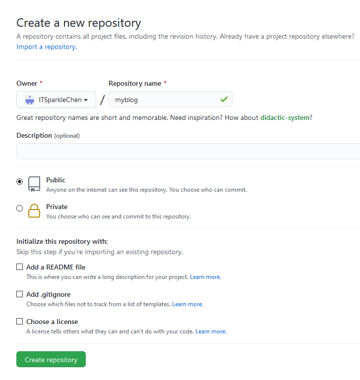
网上很多人使用GitHub Pages 都是参考的官方提供的明明规则 账户名.github.io 严格创建仓库,我不是很喜欢这种创建，url会很长，完全可以任意起名字，只要我们VuePress config.js中的 base 配置和这个名字保持一致就行
将根目录 docs/.vuepress 下的config.json 中的base路径修改一下 这个地方会影响所有图片和链接的路由，base配置成"/myblog/"，通过npm run build可以看下dist中生成的静态页面如下
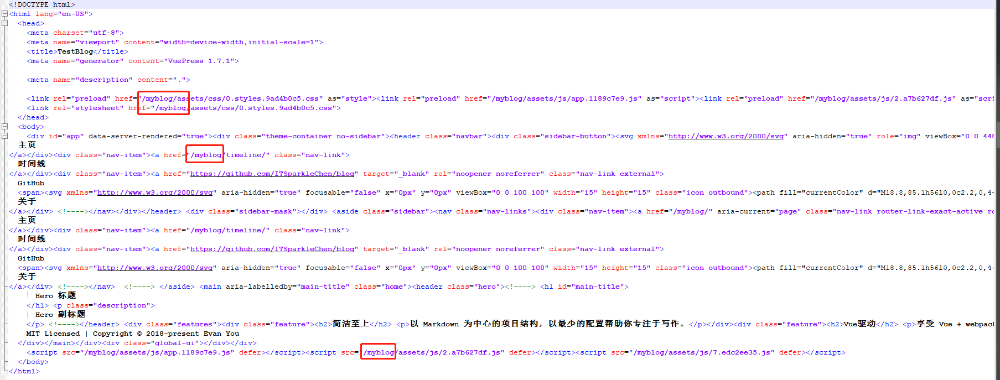
所有资源前面都会以 "/myblog/" 也就是base会影响我们资源定位，js、链接等，我当时部署就踩了很多坑，本地运行的好好的，上传到GitHub上怎么脚本什么都没有了，页面布局、图片、包括点击跳转页面都不正常。这个百分百是资源路径不对,因此这个地方很重要!!! 我们在Github创建的也是myblog,以后配置了GitHup Pages 访问地址一般是https://xxx.github.io/myblog/xxx
# GitHub部署
Gti 本地仓库初始化
在VuePress生成的静态页面有index.html 的目录拷贝到某一个文件夹例如
public下(随便一个空目录都行),右键Git Bash here, 执行以下命令git init1不要在VuePress生成的静态文件的文件夹下初始化
不建议直接在VuePress 构建生成的静态文件的目录下执行，因为Git初始化会在当前目录生成一个.git的文件夹，这个是当前目录是本地仓库，记录当前仓库文件的一个状态。如果直接在
build输出的静态文件夹，比如dist中初始化，那么当我们build时候，默认会删除当前dist中的所有文件及文件夹，因此可以将dist中文件另外拷贝到某个新建的文件夹A下或者空文件夹，然后再右建 Git Bash here中执行git初始化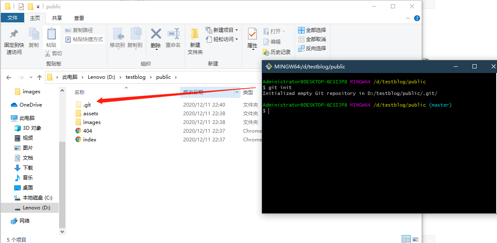
上传修改代码文件到本地仓库
git add -A1| ------------- |:-------------:| | git add . | 所有变化提交 | | git add -u | 仅监控不提交 | | git add -A | .和-u的合并 |1
2
3
4会看到Git 命令行输出
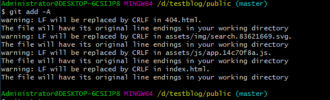
查询状态
git status1可以查看当前文件存在状态
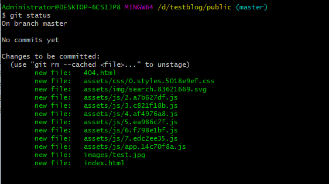
本地提交
git commit -m "Init" #-m是指的后面提交的信息1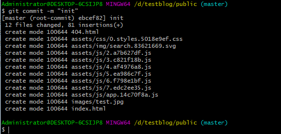
上传代码
git push -u origin master # 新仓库上传用-u 已有仓库可以不使用-u1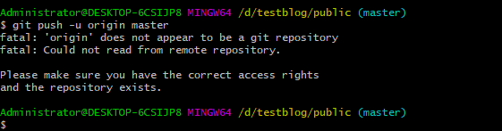
这个地方的意思是上传出错，不能获取远程仓库，这是因为我们没哟将本地仓库与远程仓库做关联，也就是你上传到我github上我怎么知道你要传到那个账户的仓库下
关联远程仓库
以我仓库的地址为例
git remote add origin https://github.com/ITSparkleChen/myblog.git 或者 git remote add origin git@github.com:ITSparkleChen/myblog.git1
2
3怎么查看自己的地址，需要登陆GitHub打开我们刚才创建的新的仓库
https方式关联
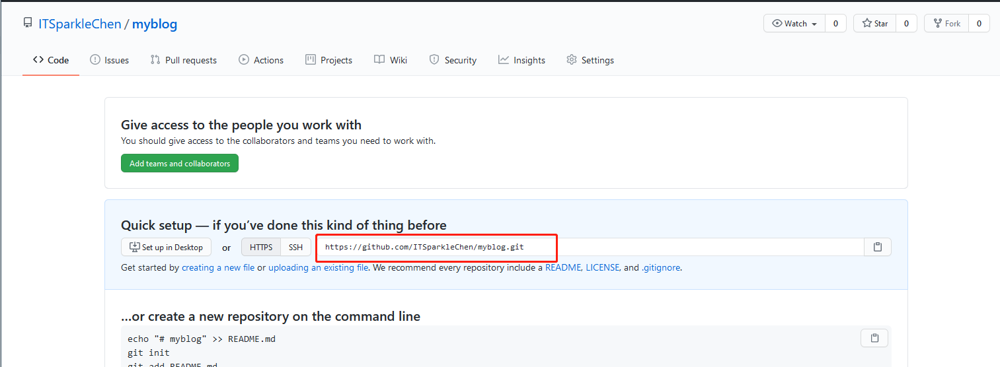
ssh方式关联
当使用ssh方式出错，可能是由于本地没有生成 SSH 公钥
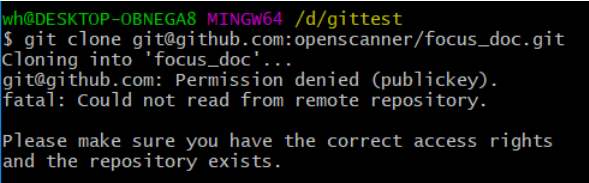
可以查看下本地git的配置
git config --global --list1如果配置过会显示如下：
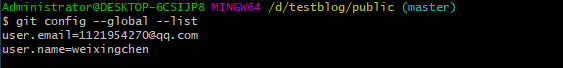
没有配置则需要执行如下命令进行配置
git config --global user.name "这里换上你的用户名" git config --global user.email "这里换上你的邮箱"1
2ssh-keygen -t rsa -C "你的邮箱"1然后一直按回车键Enter就行
找到
C:\Users\你电脑的登陆名\.ssh\下的id_rsa.pub的文件，打开拷贝里面的内容登陆Github 点击右上角头像 找到 “setting”菜单
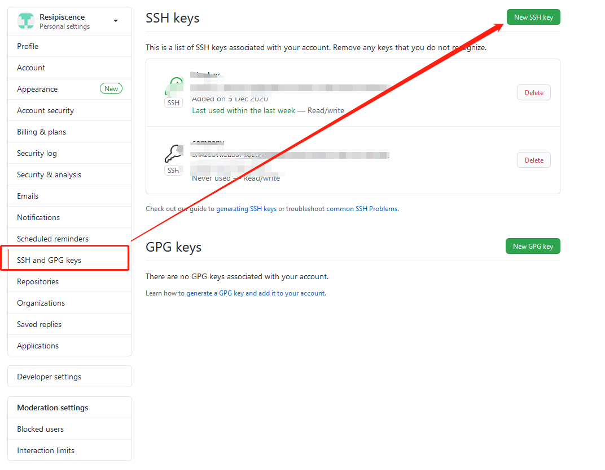
我们刚才拷贝的密匙配置到里面就行了，也就完成了授权本地可以上传了
再次push
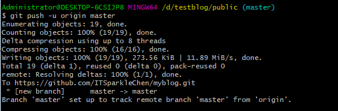
发现已经上传成功
配置GitHub Pages
上传完毕之后会发现我们的仓库是这个样子,里面有VuePress生成的静态页面主页 而且是
index.html,而Git Hub Pages需要这样的一个主页作为启动也，我们 进入settings配置一下GitHub Pages ,详细配置请参考上篇博客GitHub Pages 配置
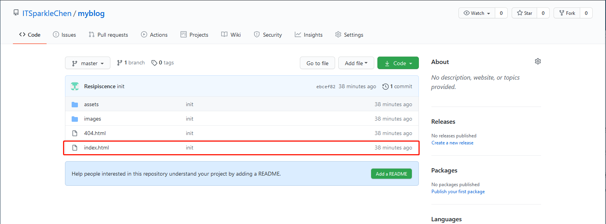
访问首页
等待GitHub Pages 配置生效后，点击链接即可访问主页。
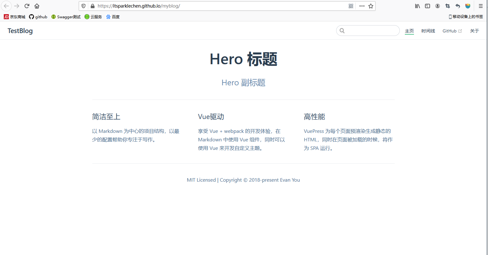
特别说明，如果正常访问，请跳过
假如你的页面出现这个情况,一定是路径问题
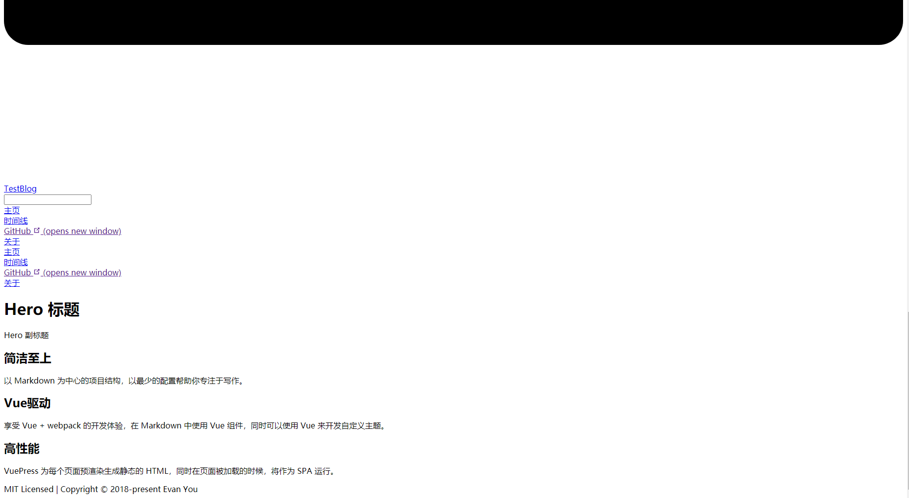
请确保三个地方
- 工程根目录docs/.vuepress/config.js中的
base路径是否和我们创建仓库的名字一致
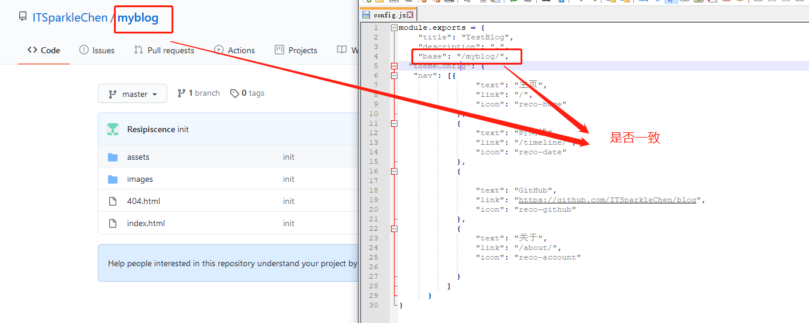
仓库里
index.html是否在根节点，Github Pages是否选了root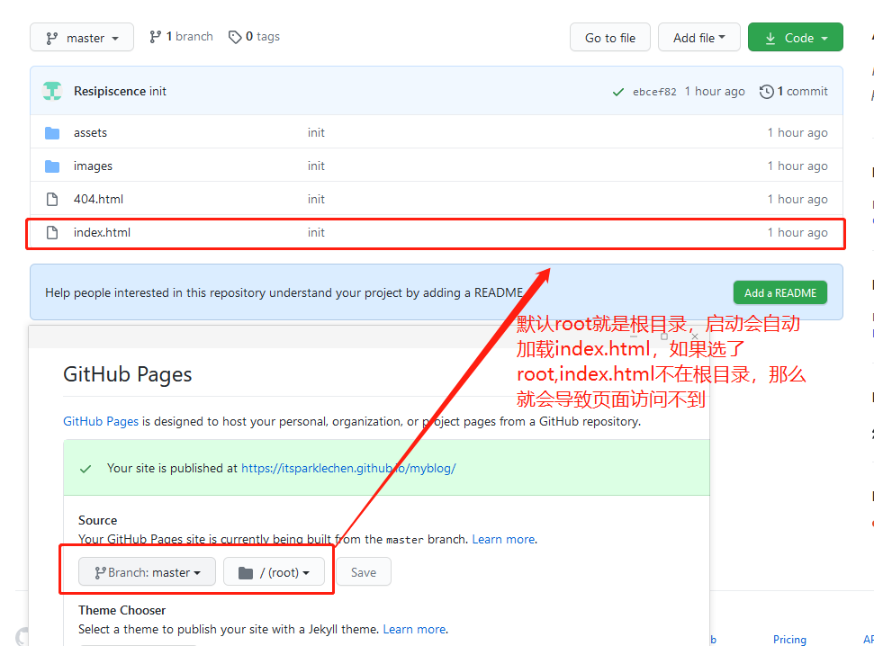
需要自己调试下，浏览器F12打开调试模式，控制台，重新刷新页面，报错部分移上去能看到具体哪些资源加载错误，调整下位置，或者打开页面（index.html）代码进行查看js路径和图片路径，我们所有资源访问都是建立在
https://github.com/ITSparkleChen/myblog/开头，比如加载图片那么使用访问的路径是https://github.com/ITSparkleChen/myblog/images/xxx.jpg或者界面使用到某个js脚本，一定是https://github.com/ITSparkleChen/myblog/assets/js/xxx.js
重要的事情说三遍
出现上述页面与本地实际运行不符合
一定是路径问题!
一定是路径问题!
一定是路径问题!
我也是磕磕碰碰过来的，幸好会点浏览器调试，找了好久才发现是路径问题......
这样整个简单的VuePress驱动静态网页并发布到GitHub 上设置GitHub Pages来简单实现外网访问自己的网站
大家可以找一个主题进行搭建，这是我的博客使用了一个简洁好看的主题vuepress-theme-reco,在主题基础上也可以自行配置一些插件哦.